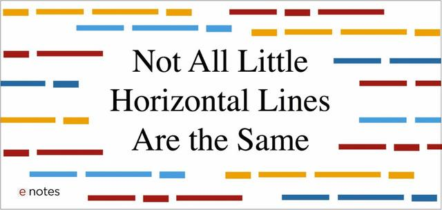

EN dashes
Use EN dashes with spaces – like this – to set off phrases, and between digits to indicate a range:
- 1 – 10 October;
- 25 – 30 mm.
EM dashes
Use EM dashes to introduce speakers in narrative dialogue.
— Like this one.
“Quotes”
Always ‘use’ the “curly” ones, unless you know what "you" are 'doing'.

Windows – — ‘ ’ “ ”
Using the number pad
- en dash:
Alt+0150 - em dash:
Alt+0151 - single quotes:
Alt+ [0145|146] - double quotes:
Alt+ [0147|148]
Linux – — ‘ ’ “ ”
Using Unicode keycode
- en dash:
Ctrl+Shift+u+2013+Space - em dash:
Ctrl+Shift+u+2014+Space - single quotes:
Ctrl+Shift+u+[ 2018 | 2019 ]+Space - double quotes:
Ctrl+Shift+u+[ 201C | 201D ]+Space
With Compose key
- en dash:
Compose--. - em dash:
Compose---
Mac OSX – — ‘ ’ “ ”
- en dash:
option+- - em dash:
option+Shift+- - single quotes:
option+],option+shift+] - double quotes:
option+[,option+shift+[
Source: PraticalTypography